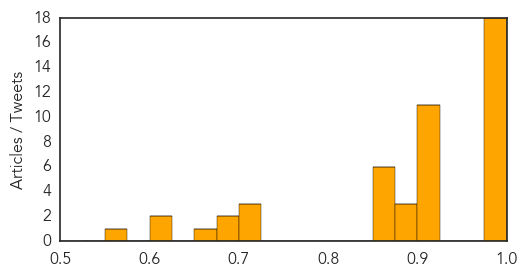
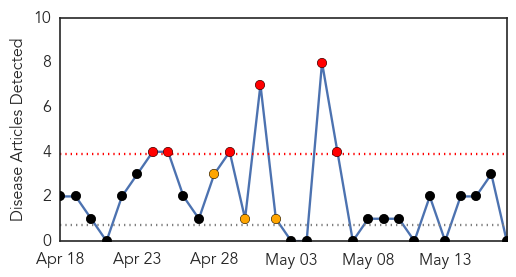

Unknown
30-Day Web Trend
5 alerts, 2 warnings

30-Day Twitter Trend
2 alerts, 0 warnings

Article Locations

Article Confidences
Top Articles:
- 1.000
- Silently among us: Scientists worry about milder cases of MERS
- 1.000
- Scientists worry about milder cases of MERS
- 1.000
- Third U.S. Man Tests Positive for MERS Virus, CDC Reports
- 1.000
- Third U.S. Man Tests Positive for MERS Virus, CDC Reports
- 0.999
- US reports third case of MERS virus
- 0.999
- U.S. reports third case of MERS virus
- 0.999
- US reports third case of MERS virus
- 0.999
- CDC finds third MERS case in United States
- 0.996
- More Deaths In Saudi Arabia From MERS Virus
- 0.996
- CDC: First case of MERS contracted in the United States; Here’s how to protect yourself
- 0.994
- MERS Death Toll Rises to 163
- 0.994
- MERS Virus Spreads From One American To Another
- 0.992
- Third case of MERS respiratory virus confirmed in the US
- 0.986
- Illinois man first American diagnosed with MERS
- 0.982
- Illinois resident tests positive for MERS virus -CDC
- 0.979
- Illinois man contracts MERS virus after contact with Munster patient
- 0.976
- Illinois resident tests positive for MERS virus -CDC
- 0.976
- CDC Reports That Another American Has Tested Positive For MERS
- 0.917
- Chicago Tribune
- 0.917
- Chicago Tribune
- 0.917
- Chicago Tribune
- 0.917
- Chicago Tribune
- 0.917
- Chicago Tribune
- 0.917
- Chicago Tribune
- 0.917
- Chicago Tribune
- 0.917
- Chicago Tribune
- 0.917
- Chicago Tribune
- 0.910
- The world windows to Thailand
- 0.910
- The world windows to Thailand
- 0.889
- Health Officials Report First U.S. Person-to-Person MERS Transmission
- 0.888
- Silent virus a rare, dangerous risk for the unborn; Utah leads way in awareness campaign
- 0.876
- Silent virus a rare, dangerous risk for the unborn
- 0.866
- Cairo bomb wounds at least three at pro-Sisi event -sources
- 0.866
- Chad's Deby says regional powers ready for "total war" on Boko Haram
- 0.866
- France's Hollande says Boko Haram threat to all West, Central Africa
- 0.866
- Borno state governor Shettima poses with agriculture engineers during a ceremony marking part of a government program to combat Boko Haram in Borno through agriculture development, in Abuja
- 0.866
- Death toll from clashes in Libya's Benghazi 43, more than 100 wounded
- 0.866
- Colombia gov't, FARC rebels reach accord on illegal drug trade -source
- 0.716
- Letter: National Lyme Disease Awareness Month
- 0.710
- Silent virus a rare, dangerous risk for the unborn
- 0.709
- Regular BP check after 30 must: Doctors
- 0.696
- Tourists, locals arriving here with communicable diseases under scrutiny
- 0.696
- Middle East Online
- 0.674
- Disease impacts pigmeat supply
- 0.621
- Legionnaires' disease reported at apartments
- 0.610
- At least 6 people diagnosed with rare disorder in Kansas, KC
- 0.557
- FDA still baffled by pets treats sickening animals
Top Tweets:
- 0.697
- Contrabando de cerveza afectó en un 20% a los almaceneros: El contrabando de productos de consumo y de limpiez... http://t.co/ApH6bIIB7O
- 0.516
- Causan perdida de 907 millones de guaraníes al contrabando, en esta semana: Varios operativos enmarcados en “H... http://t.co/I9qDUqDSfP
Pertussis
30-Day Web Trend
6 alerts, 3 warnings

30-Day Twitter Trend
0 alerts, 0 warnings

Article Locations

Article Confidences

Top Articles:
-
No articles found for May 17, 2014
Top Tweets:
-
No tweets found for May 17, 2014